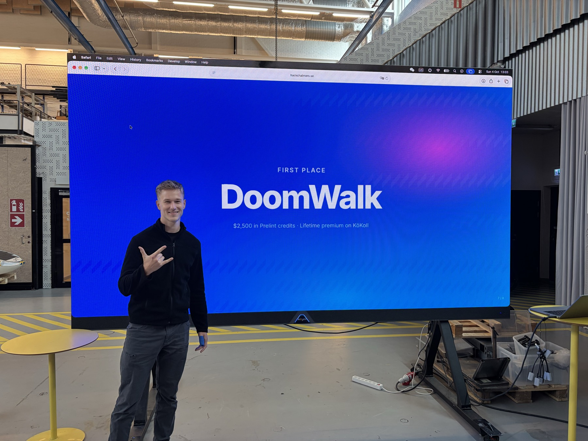
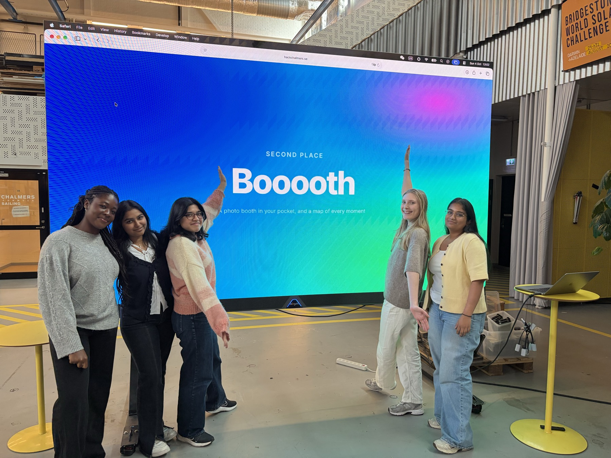
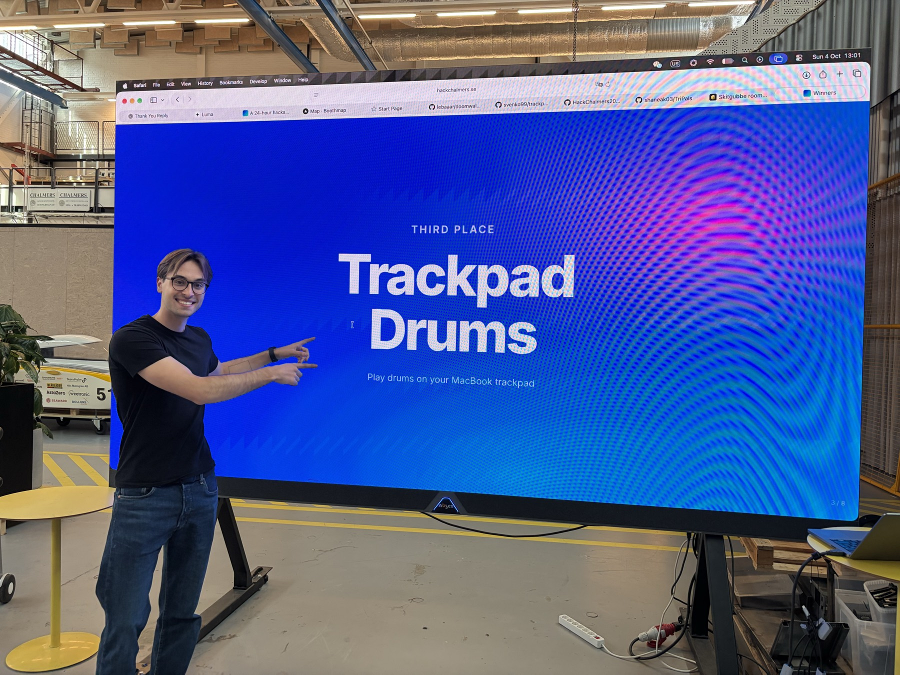

Hack
Chalmers
24 hours. 34 builders.
10 projects.
34 people spent a weekend at Chalmers building whatever they wanted.
No theme. No tracks. Ten projects got finished and demoed on Sunday morning.
Winners

1. DoomWalk
An Android app that measures how far you scroll in metres and makes you walk for it. Walking fills a bank, scrolling empties it, and every 50 metres you scroll makes the next metre more expensive. Run out and the app you are in fades behind a blur until you get up. Messages, maps and banking are never touched, and nothing leaves your phone.

2. Booooth
A photo booth in the browser, built like the real thing. The curtain opens, you get a 3-2-1 countdown and four shots, and the strip prints down the screen. Pick filters, frames and themes, download it, then pin it to a map shared with everyone else.
Francisca Obenewaa Ampadu · Suprita Reddy Cenkeramaddi · Sree Harshini Ravi · Ayesha Mujahid · Malin Ommundsen

3. Trackpad Drums
Turns a MacBook trackpad into a drum kit, no extra hardware. Six zones, and the pad feels how hard you press, so a light tap is soft and a hard one hits. Hold a zone to roll it, hold the kick and slide for a melody, build it up and let go for the drop. The trackpad taps back so you feel the beat.
The rest
Picking three was harder than expected. Here are the rest, in no particular order.
Parcelboard
Reads order confirmations and tracking updates out of your inbox automatically, so every online order you are waiting for sits in one place.
Playbit
Multiplayer browser games for friend groups. Open a table, share a code, play a few short rounds, and argue about the leaderboard afterwards.
TriPals
Three travel tools in one: a flight search that counts the transit to and from the airport, walking routes that weigh the fastest way against the one that passes the most worth seeing, and a way to find people to travel with based on interests and budget.
EarMirror
A companion app for microtia and atresia. Log symptoms and recovery day by day, track how long the hearing device is worn, keep weekly photos to compare, and get a plain-language summary of how things are going.
Matkoll+
Prices a whole grocery basket across Swedish stores and shows the trade-off between the cheapest plan and the fewest shops to visit. Search in Swedish or English, add your store memberships so prices match what you actually pay, and keep receipts to see where the money goes.
Mohanraam Vasanthi Krishna · Darane Varatharajan · Adithya Arul · Gokula Gopala
Lostloop
Found something? Upload it with a security question only the owner could answer. Whoever lost it describes it to an AI agent, answers the question, and the two of you arrange a pickup.
RecipeApp
Generates recipes with AI and then walks you through them step by step while you cook.
Photos
Sponsors
Thanks for building
See you at the next one.